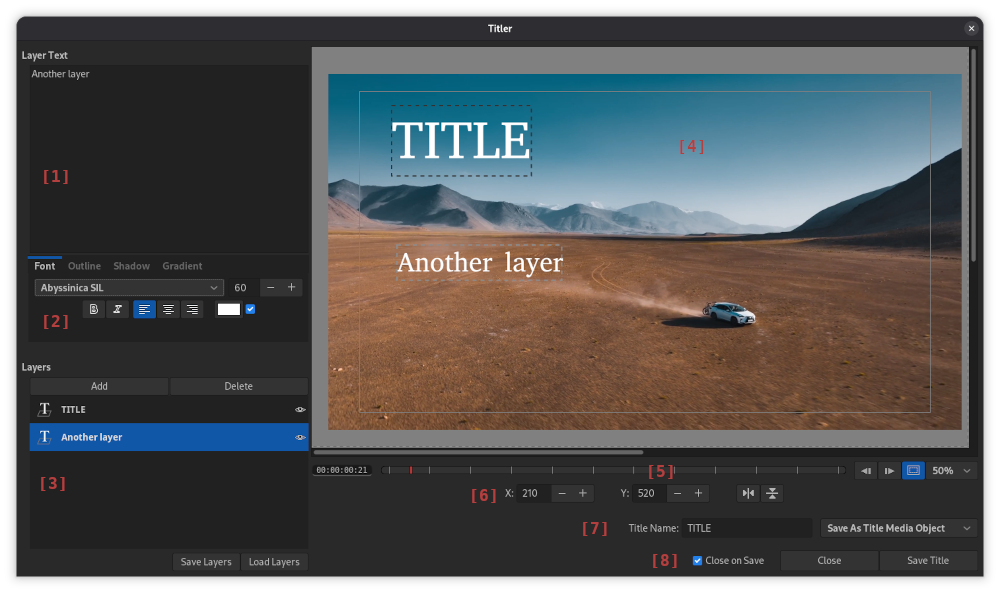

Flowblade comes with Titler tool for title creation. Titles can be saved in two differen media types:
- Title Media Items These are media items that render title graphics Clips when placd on Timeline. Title Clips created from this media type can be edited on Timeline.
- Graphics Media These PNG files and cannot be edited later.
Titler Window

[1] Layer Text Area. Text of current active layer. Text can contain multiple lines.
[2] Font and Paragraph Per layer font and paragraph parameter editors.
[3] Layers Buttons to Add, Delete, Save and Load Layer. Clicking on a layer makes it active and editable.
[4] Work View Created text shown on top of selected timeline position. Layers can dragged to new positions with mouse. Pressing on layer makes it active.
[5] View Controls Panel Current position timecode display, Position bar for selecting current position, next and previous frame buttons, safe area overlay toggle, zoom level selector.
[6] Layer Positioning Text inputs for X and Y positions, horizontal and vertical centering buttons.
[7] Export Controls Title name input area, saved media type selector.
[8] Save and Close Closing behaviour control, Close and Save buttons.
Opening Titler
- Press button in application window top bar.
- Select Tools > Titler from application menu.